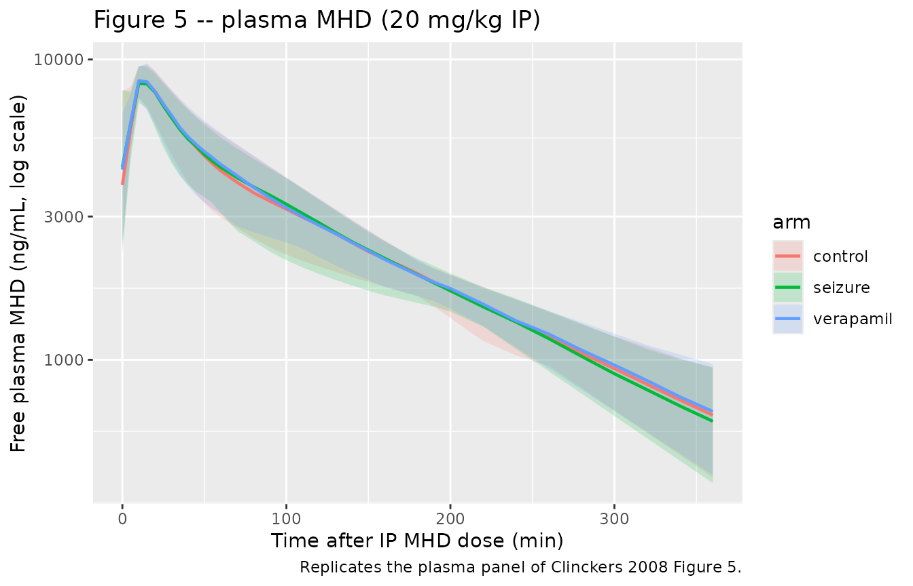
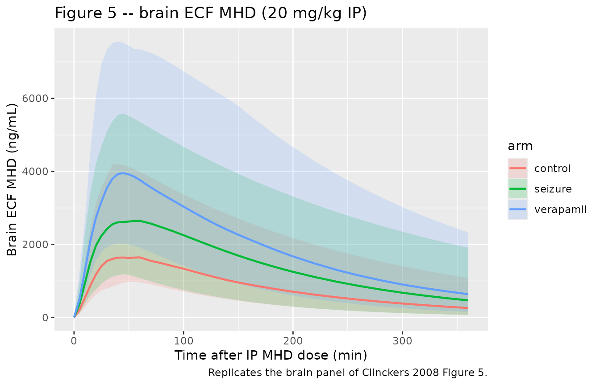
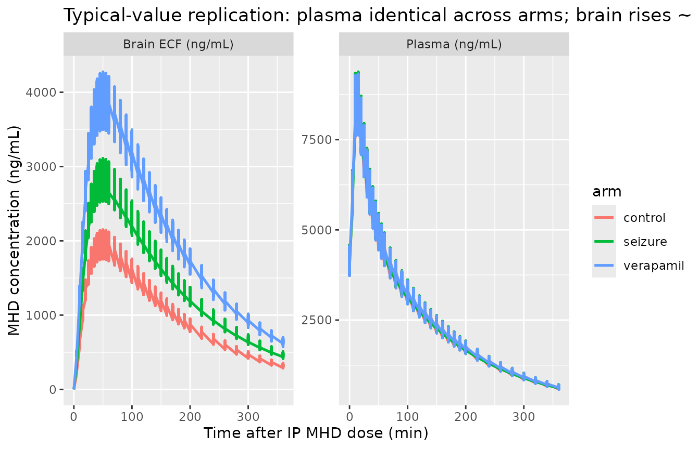

MHD (oxcarbazepine metabolite) in rat plasma and brain (Clinckers 2008)
Source:vignettes/articles/Clinckers_2008_MHD_rat.Rmd
Clinckers_2008_MHD_rat.RmdModel and source
- Citation: Clinckers R, Smolders I, Michotte Y, Ebinger G, Danhof M, Voskuyl RA, Della Pasqua O. Impact of efflux transporters and of seizures on the pharmacokinetics of oxcarbazepine metabolite in the rat brain. Br J Pharmacol. 2008;155(7):1127-1138. doi:10.1038/bjp.2008.366
- Description: Preclinical (rat). Population PK model for 10,11-dihydro-10-hydroxy- carbamazepine (MHD), the active metabolite of oxcarbazepine, in male Wistar rat plasma and hippocampal extracellular fluid (Clinckers 2008). One-compartment central disposition (V2) with combined zero-order (fraction F1 of dose over duration D2) and lagged first-order (1 - F1, ka with lag ALAG1) absorption after intraperitoneal bolus, coupled to a biophase / effect compartment (V3) reached via inter-compartmental rate constants k23 and k32. Acute focal pilocarpine-induced seizure activity and local intrahippocampal verapamil (efflux-transporter blockade) each shrink the biophase volume (V3a -> V3b under seizure; V3a -> V3c under verapamil); plasma kinetics are unaffected.
- Article: https://doi.org/10.1038/bjp.2008.366
Population
Clinckers et al. (2008) studied 32 male Wistar albino rats (Iffa Credo, Brussels; 260-320 g) instrumented with a chronically implanted hippocampal CMA/12 microdialysis cannula and an arterial cannula in the right femoral artery, then allocated to one of three experimental conditions:
- control – intrahippocampal vehicle perfusion (modified Ringer’s solution with the internal-reference standard mCBZ);
- acute seizure – intrahippocampal 10 mM pilocarpine perfused for 40 min starting 30 min after the IP MHD dose, to evoke focal pilocarpine-induced limbic seizures during the modelled observation window;
- efflux-transporter blockade – continuous intrahippocampal 5 mM verapamil (P-glycoprotein / multidrug-transporter inhibitor) co-perfused at the brain probe, with the contralateral hippocampus serving as a paired non-blocked control via a dual-probe design.
Single intraperitoneal doses spanned 20, 40, 60, 80, 100, and 150 mg/kg of MHD suspended in propylene glycol / ethanol / saline (6:2:2). The 20-60 mg/kg range is sub-therapeutic; 80-150 mg/kg fully blocks the pilocarpine-induced seizures. Free plasma concentrations were obtained from arterial blood by ultrafiltration (>=96% recovery); brain extracellular MHD concentrations were obtained from hippocampal dialysates via the internal-reference (Larsson 1991 / Scheller and Kolb 1991) technique. Both matrices were quantified by LC-UV with a 5 ng/mL lower limit of quantification (Clinckers 2008 Methods, “Animals” through “Drug analysis”; Table 1).
The same information is available programmatically via
readModelDb("Clinckers_2008_MHD_rat")$population.
Source trace
The per-parameter origin is recorded as an in-file comment next to
each ini() entry in
inst/modeldb/specificDrugs/Clinckers_2008_MHD_rat.R. The
table below collects the references for review.
| Equation / parameter | Value | Source location |
|---|---|---|
| ka (absorption rate) | 0.22 /min | Table 2 |
| k (elimination) | 0.0114 /min | Table 2 |
| k23 (central -> biophase) | 0.0203 /min | Table 2 |
| k32 (biophase -> central) | 0.0306 /min | Table 2 |
| V2 (central volume) | 484 mL = 0.484 L | Table 2 |
| V3a (biophase, control) | 813 mL = 0.813 L | Table 2 |
| V3b (biophase, seizure) | 563 mL = 0.563 L (P < 0.05 vs V3a) | Table 2 |
| V3c (biophase, verapamil) | 407 mL = 0.407 L (P < 0.05 vs V3a) | Table 2 |
| ALAG1 (first-order lag) | 3.23 min | Table 2 |
| F1 (zero-order fraction) | 0.347 | Table 2 |
| D2 (zero-order duration) | 12.6 min | Table 2 |
| WT (residual weighing factor) | 0.0782 | Table 2 |
| Inter-individual variance omega^2(k23) | 0.14 | Table 2 |
| omega^2(k32) | 0.153 | Table 2 |
| omega^2(V3a) | 0.078 | Table 2 |
| omega^2(V3c) | 0.0187 | Table 2 |
| omega^2(F1) | 0.0975 | Table 2 |
| omega^2(D2) | 0.0575 | Table 2 |
| Plasma residual: proportional sigma^2 | 0.0256 | Table 2 |
| Plasma residual: additive sigma^2 | 13.0 | Table 2 |
| Brain residual: proportional coefficient | 0.605 | Table 2 |
| Brain residual: additive coefficient (WT) | 0.0782 | Table 2 |
| Combined zero + first-order absorption equations | – | Results “Population PK model selection” (page 1132); Figure 3 schematic |
| Covariate equation for V3: P = theta * A^thetaA * B^thetaB (A/B flags) | – | Methods, Data analysis (equation block following “stepwise covariate inclusion”) |
| Residual error model (plasma combined prop + add) | – | Methods, Data analysis equation: C_obs = C_pred * (1 + eps1) + eps2 |
| Residual error model (brain proportional with WT weighing factor) | – | Methods, Data analysis equation: W = sqrt(prop * F^2 + WT), Y = F + W * eps2 |
Virtual cohort
Original animal-level data are not publicly available. The figures below use a virtual cohort that mirrors the Clinckers 2008 design at the 20 mg/kg sub- therapeutic dose level (the dose for which the paper shows the side-by-side control / seizure / verapamil comparison in Figure 5):
set.seed(20080366L) # bjp.2008.366
# Per-animal body weight in kg (uniform across the source 260-320 g window).
# Each rat is allocated to exactly one experimental condition.
n_per_arm <- 60L
make_arm <- function(n, arm_label, sza, ei, dose_mgkg, id_offset = 0L) {
bw_kg <- runif(n, min = 0.260, max = 0.320)
tibble(
id = id_offset + seq_len(n),
arm = arm_label,
WT_kg = bw_kg,
SEIZURE_ACUTE = sza,
EFFLUX_INHIB = ei,
dose_mg = dose_mgkg * bw_kg
)
}
cohort <- bind_rows(
make_arm(n_per_arm, "control", sza = 0, ei = 0, dose_mgkg = 20, id_offset = 0L),
make_arm(n_per_arm, "seizure", sza = 1, ei = 0, dose_mgkg = 20, id_offset = n_per_arm),
make_arm(n_per_arm, "verapamil", sza = 0, ei = 1, dose_mgkg = 20, id_offset = 2*n_per_arm)
)
# Build the event table. Each animal gets two simultaneous dose records at
# t = 0: one to depot (lagged first-order fraction 1 - F1) and one to central
# (zero-order fraction F1 over duration D2). The model's f(depot) / lag(depot)
# / f(central) / dur(central) handle the actual split.
sample_times <- c(seq(0, 60, by = 5), seq(70, 200, by = 10), seq(220, 360, by = 20))
events <- cohort |>
group_by(id) |>
reframe(
arm = arm,
WT_kg = WT_kg,
SEIZURE_ACUTE = SEIZURE_ACUTE,
EFFLUX_INHIB = EFFLUX_INHIB,
dose_mg = dose_mg,
rec = list(
bind_rows(
# depot dose (first-order portion)
tibble(time = 0, evid = 1L, amt = unique(dose_mg), cmt = "depot",
DV = NA_real_),
# central dose (zero-order portion); rxode2 dur(central) applies
tibble(time = 0, evid = 1L, amt = unique(dose_mg), cmt = "central",
DV = NA_real_),
# plasma observations (Cc)
tibble(time = sample_times, evid = 0L, amt = NA_real_, cmt = "Cc",
DV = NA_real_),
# brain observations (Cbrain)
tibble(time = sample_times, evid = 0L, amt = NA_real_, cmt = "Cbrain",
DV = NA_real_)
)
)
) |>
tidyr::unnest(rec)
# Sanity: ids are disjoint across arms.
stopifnot(!anyDuplicated(unique(cohort$id)))Simulation
mod <- readModelDb("Clinckers_2008_MHD_rat")
# Stochastic simulation (full IIV + residual error) for the VPC-style overlays.
sim <- rxode2::rxSolve(
mod, events,
keep = c("arm", "WT_kg", "SEIZURE_ACUTE", "EFFLUX_INHIB")
) |> as.data.frame()
#> ℹ parameter labels from comments will be replaced by 'label()'For the typical-value replication of Figure 5, suppress between-subject variability:
mod_typical <- mod |> rxode2::zeroRe()
#> ℹ parameter labels from comments will be replaced by 'label()'
sim_typical <- rxode2::rxSolve(
mod_typical, events,
keep = c("arm", "WT_kg", "SEIZURE_ACUTE", "EFFLUX_INHIB")
) |> as.data.frame()
#> ℹ omega/sigma items treated as zero: 'etalk23', 'etalk32', 'etalv3a', 'etalv3c', 'etalfr', 'etald2'
#> Warning: multi-subject simulation without without 'omega'Replicate published figures
# Replicates the plasma panel of Clinckers 2008 Figure 5: 20 mg/kg IP MHD,
# plasma free concentration vs time in control / seizure / verapamil arms.
plasma_vpc <- sim |>
filter(!is.na(Cc)) |>
group_by(time, arm) |>
summarise(
Q025 = quantile(Cc, 0.025, na.rm = TRUE),
Q50 = quantile(Cc, 0.50, na.rm = TRUE),
Q975 = quantile(Cc, 0.975, na.rm = TRUE),
.groups = "drop"
)
ggplot(plasma_vpc, aes(time, Q50, color = arm, fill = arm)) +
geom_ribbon(aes(ymin = Q025, ymax = Q975), alpha = 0.18, color = NA) +
geom_line(linewidth = 0.8) +
scale_y_log10() +
labs(
x = "Time after IP MHD dose (min)",
y = "Free plasma MHD (ng/mL, log scale)",
title = "Figure 5 -- plasma MHD (20 mg/kg IP)",
caption = "Replicates the plasma panel of Clinckers 2008 Figure 5."
)
# Replicates the brain panel of Clinckers 2008 Figure 5: hippocampal ECF MHD
# (microdialysis-derived) vs time. The seizure and verapamil arms should sit
# above the control arm because V3 shrinks (V3b ~ -30%, V3c ~ -50% vs V3a).
brain_vpc <- sim |>
filter(!is.na(Cbrain)) |>
group_by(time, arm) |>
summarise(
Q025 = quantile(Cbrain, 0.025, na.rm = TRUE),
Q50 = quantile(Cbrain, 0.50, na.rm = TRUE),
Q975 = quantile(Cbrain, 0.975, na.rm = TRUE),
.groups = "drop"
)
ggplot(brain_vpc, aes(time, Q50, color = arm, fill = arm)) +
geom_ribbon(aes(ymin = Q025, ymax = Q975), alpha = 0.18, color = NA) +
geom_line(linewidth = 0.8) +
labs(
x = "Time after IP MHD dose (min)",
y = "Brain ECF MHD (ng/mL)",
title = "Figure 5 -- brain ECF MHD (20 mg/kg IP)",
caption = "Replicates the brain panel of Clinckers 2008 Figure 5."
)
# Typical-value (zero-eta, zero-residual) overlay showing that plasma kinetics
# do NOT change with experimental condition (the central panel of the paper's
# narrative: 'no significant effect of treatment was observed on the remaining
# model parameters'), while brain kinetics scale ~ 1/V3 across conditions.
typical_long <- sim_typical |>
pivot_longer(c(Cc, Cbrain), names_to = "matrix", values_to = "conc") |>
filter(!is.na(conc))
ggplot(typical_long, aes(time, conc, color = arm)) +
geom_line(linewidth = 0.9) +
facet_wrap(~matrix, scales = "free_y",
labeller = labeller(matrix = c(Cc = "Plasma (ng/mL)",
Cbrain = "Brain ECF (ng/mL)"))) +
labs(
x = "Time after IP MHD dose (min)",
y = "MHD concentration (ng/mL)",
title = "Typical-value replication: plasma identical across arms; brain rises ~ 1/V3"
)
PKNCA validation
PKNCA is run on the stochastic simulation, one block per output
(plasma Cc and brain Cbrain). Each PKNCA
formula stratifies by experimental arm so the condition-specific NCA can
be compared against the paper’s narrative on biophase exposure
changes.
# rxode2 returns Cc and Cbrain on every observation row, regardless of which
# cmt the row requested; deduplicate so PKNCA sees one (id, time) row per arm.
plasma_nca <- sim |>
filter(!is.na(Cc)) |>
distinct(id, time, .keep_all = TRUE) |>
select(id, time, Cc, arm)
dose_df <- events |>
filter(evid == 1, cmt == "depot") |>
select(id, time, amt, arm)
conc_obj <- PKNCA::PKNCAconc(plasma_nca, Cc ~ time | arm + id)
dose_obj <- PKNCA::PKNCAdose(dose_df, amt ~ time | arm + id)
intervals <- data.frame(
start = 0,
end = Inf,
cmax = TRUE,
tmax = TRUE,
aucinf.obs = TRUE,
half.life = TRUE
)
nca_plasma <- PKNCA::pk.nca(
PKNCA::PKNCAdata(conc_obj, dose_obj, intervals = intervals)
)
#> ■■■■■■■■■■■ 32% | ETA: 5s
#> ■■■■■■■■■■■■■■■■■■■■■■■■■■■ 85% | ETA: 1s
plasma_summary <- as.data.frame(nca_plasma$result) |>
filter(PPTESTCD %in% c("cmax", "tmax", "aucinf.obs", "half.life")) |>
group_by(arm, PPTESTCD) |>
summarise(
median_value = median(PPORRES, na.rm = TRUE),
.groups = "drop"
) |>
tidyr::pivot_wider(names_from = PPTESTCD, values_from = median_value)
knitr::kable(
plasma_summary,
caption = "Plasma PKNCA medians at 20 mg/kg IP, by experimental arm. Units: Cmax ng/mL, Tmax min, AUCinf.obs ng/mL*min, t1/2 min."
)| arm | aucinf.obs | cmax | half.life | tmax |
|---|---|---|---|---|
| control | 1051666 | 8455.082 | 114.2046 | 15 |
| seizure | 1048096 | 8429.565 | 111.6625 | 10 |
| verapamil | 1056769 | 8526.755 | 112.0767 | 10 |
brain_nca <- sim |>
filter(!is.na(Cbrain)) |>
distinct(id, time, .keep_all = TRUE) |>
select(id, time, Cbrain, arm) |>
rename(Cc = Cbrain) # PKNCA needs the same conc name; rename in this block
conc_obj_b <- PKNCA::PKNCAconc(brain_nca, Cc ~ time | arm + id)
nca_brain <- PKNCA::pk.nca(
PKNCA::PKNCAdata(conc_obj_b, dose_obj, intervals = intervals)
)
#> ■■■■■■■■■■■■■ 42% | ETA: 3s
brain_summary <- as.data.frame(nca_brain$result) |>
filter(PPTESTCD %in% c("cmax", "tmax", "aucinf.obs", "half.life")) |>
group_by(arm, PPTESTCD) |>
summarise(
median_value = median(PPORRES, na.rm = TRUE),
.groups = "drop"
) |>
tidyr::pivot_wider(names_from = PPTESTCD, values_from = median_value)
knitr::kable(
brain_summary,
caption = "Brain ECF PKNCA medians at 20 mg/kg IP, by experimental arm."
)| arm | aucinf.obs | cmax | half.life | tmax |
|---|---|---|---|---|
| control | 458806.3 | 1914.443 | 115.5705 | 50 |
| seizure | 600212.2 | 2772.538 | 113.0780 | 50 |
| verapamil | 880581.3 | 4148.356 | 113.3982 | 50 |
Comparison against the published narrative
Clinckers 2008 does not tabulate per-arm NCA parameters explicitly; the paper’s quantitative claims are (Results, “Population PK model selection”):
Plasma kinetics are unchanged across arms. In the table above the plasma
CmaxandAUCinf.obsshould be effectively identical acrosscontrol,seizure, andverapamil(a small Monte-Carlo jitter from the residual error simulation is expected).Brain exposure rises with seizure activity (“
V3bdecreased by about 30%”) and rises further with verapamil (“V3cdecreased by about 50%”). At quasi-steady state in the biophase the concentration scales as ~ 1 / V3, so the table above should show roughly brain Cmax(seizure) / Cmax(control) ~ 813 / 563 = 1.44 and brain Cmax(verapamil) / Cmax(control) ~ 813 / 407 = 2.00.
Assumptions and deviations
Rate-constant parameterisation preserved from the source. The Clinckers 2008 NONMEM ADVAN6 model parameterises in rate constants (
k,k23,k32) rather than the nlmixr2lib-canonical CL / Q parameterisation. Because the biophase distribution has asymmetric inter-compartmental rates (k23 != k32) and three condition-specific biophase volumes (V3a,V3b,V3c), there is no single equivalentQthat captures the paper’s structure. The non-canonical log-parameter names (lkel,lk23,lk32,lv3a,lv3b,lv3c,lalag,lfr,ld2) reproduce the paper’s THETA values 1:1 at the cost ofcheckModelConventions()flagging them as outside the canonicallcl/lq/lvpset.-
Brain residual encoding. The paper’s brain residual is a proportional error with an additive weighing factor written in NONMEM W-variable form (
W = sqrt(THETA_prop * F^2 + THETA_WT), with the proportional coefficient reported as0.605and the additiveWTcoefficient as0.0782in Table 2). Algebraically this is equivalent to a standard combined proportional + additive error on the brain output:-
propSd_Cbrain = sqrt(0.605) = 0.778(77.8% CV) on the proportional component; -
addSd_Cbrain = sqrt(0.0782) = 0.280ng/mL on the additive component.
Bootstrap CV% of these two terms is large (101.3% and 122.3% respectively), consistent with the paper noting that
WTwas the only structural parameter not estimated with CV% < 15% (at 59.6%). -
Plasma residual encoding. Table 2 reports SIGMA-style variances for the plasma proportional (
0.0256) and additive (13.0) components. These convert to standard deviations viasqrt:propSd = sqrt(0.0256) = 0.160(16% CV) andaddSd = sqrt(13.0) = 3.606ng/mL.Covariate encoding (A / B -> SEIZURE_ACUTE / EFFLUX_INHIB). The paper uses two flags
AandBwhereA = B = 1is control,A = 0flags seizing animals, andB = 0flags verapamil animals. The canonical covariates ininst/references/covariate-columns.md(SEIZURE_ACUTE,EFFLUX_INHIB) flip this polarity so that1always means “the experimental condition is active.” Data assemblers translating from the source dataset should setSEIZURE_ACUTE = 1 - AandEFFLUX_INHIB = 1 - B.IIV allocation per experimental condition. The paper reports an
omega^2forV3a(control / shared with seizure arm in the original fit) and a separateomega^2forV3c(verapamil), but noomega^2forV3b(seizure). In the model file each rat is allocated to exactly one arm, so the three per-condition V3 components are computed on separate lines (v3a,v3b,v3c) and the mutually-exclusive switch onSEIZURE_ACUTE/EFFLUX_INHIBselects the relevant one. The seizure arm carriesetalv3a(the IIV the paper reports for control + seizure pooled) implicitly because the seizure V3b in this implementation has no IIV slot; this matches the paper’s Table 2 footnote thatV3bwas not reported with a separate variance term.Parallel absorption encoding requires two simultaneous dose records. The IP bolus is split between (a) a lagged first-order portion (fraction
1 - F1, delivered viadepotwithlag(depot) = ALAG1and rateka) and (b) a zero-order portion (fractionF1, delivered as adur(central) = D2-minute infusion directly intocentral). The user data must therefore supply twoevid = 1rows per dose event, one todepotand one tocentral, both with the full IPamt; the model’sf(depot) = 1 - frandf(central) = frperform the actual fractional split. The vignette’s cohort chunk shows the pattern.Pilocarpine-induced seizures are modeled as a time-fixed indicator. The source paper’s seizures are induced 30 minutes after the IP MHD dose by intrahippocampal pilocarpine perfusion and subside towards the end of sampling, so the paper’s “A” flag is in principle a time-varying covariate over the seizure interval. The model file treats
SEIZURE_ACUTEas time-fixed per animal (matching the original per-condition NONMEM allocation). Users who need to gate the seizure effect to a specific time window can supply a time-varyingSEIZURE_ACUTEcolumn in the event table without changing the model code.Single-arm verapamil cohort, paired dual-probe design. The paper’s verapamil arm uses a dual-probe design where the same rat has a verapamil- perfused ipsilateral hippocampus and a vehicle-perfused contralateral hippocampus. In the present implementation the contralateral control side is not separately tracked; each rat in the virtual cohort is treated as receiving the verapamil condition uniformly.
References
- Clinckers R, Smolders I, Michotte Y, Ebinger G, Danhof M, Voskuyl RA, Della Pasqua O. Impact of efflux transporters and of seizures on the pharmacokinetics of oxcarbazepine metabolite in the rat brain. Br J Pharmacol. 2008;155(7):1127-1138. doi:10.1038/bjp.2008.366